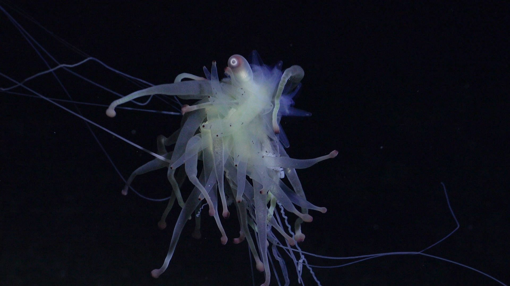
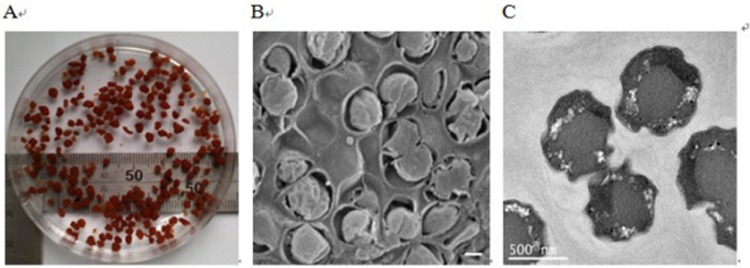

Ученые обнаружили ранее неизвестный вид морских обитателей на глубине 4000 метров
Международная экспедиция океанологов сделала сенсационное открытие на дне Тихого океана — на глубине более 4 километров найден ранее неизвестный науке вид глубоководных существ. Странные полупрозрачные организмы с необычным свечением были засняты подводными аппаратами у подводных гидротермальных источников.
Существа размером до 30 сантиметров обладают уникальной способностью выживать при колоссальном давлении и полном отсутствии света. Вместо глаз у них развиты особые сенсоры, улавливающие малейшие колебания воды. Ученых поразила сложность их социального поведения — организмы явно взаимодействуют друг с другом, обмениваясь световыми сигналами.

"Это как найти инопланетную жизнь, не покидая Землю, — комментируют исследователи. — Мы только начинаем понимать, какие формы жизни скрывает океан".
Предварительный анализ показывает, что существа питаются бактериями, которые перерабатывают токсичные химические соединения из подводных гейзеров. Образцы тканей уже доставлены на поверхность для детального изучения.
